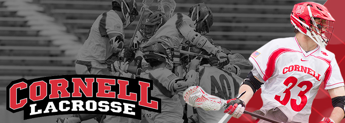
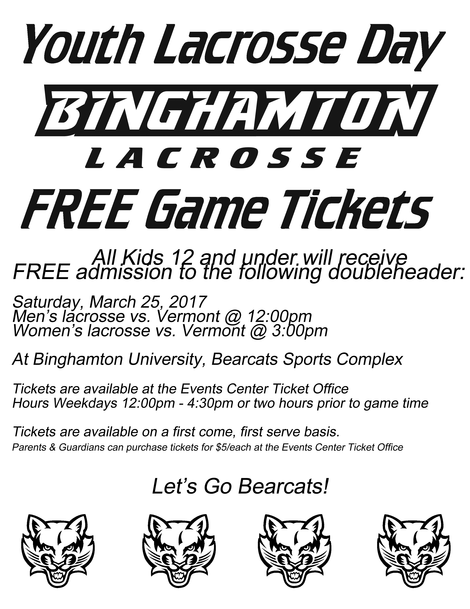

Cornell Men’s Lacrosse to Host Clinic for a Cause

Cornell Men’s Lacrosse to Host Clinic for a Cause
Sunday, April 23
Grades: 3-8
Who: Cornell Men's Lacrosse Team
What: Clinic for a Cause
Where: Schoellkopf Field on the Cornell Campus in Ithaca N.Y.
When: Sunday, April 23; 11:20 - 2:00 p.m. (Registration, Clinic, Meet and greet with players)
Registration: Begins at 10:30 a.m. at the field entrance to Schoellkopf Field
Why: To raise funds to help critically and chronically ill children in our area
Ages: Grades 3-8
Donation: $40 per participant
Once again, the Cornell men’s lacrosse team will host its annual fundraising event for the Dream Factory of Central New York, holding the Clinic for a Cause on Sunday, April 23 at Schoellkopf Field on the Cornell campus.
The members of the Cornell men's lacrosse team will be on hand to teach skills, give instruction, and run games. Afterwards, participants will be treated to a tour of the Big Red locker room, as well as an autograph session and pizza party with the Big Red team.
Proceeds from the clinic will benefit the Dream Factory of CNY, which grants wishes to critically and chronically ill children in our local area.
Payment: We encourage preregistration by sending checks, payable to Dream Factory of Central New York, to Cornell Lacrosse, Teagle Hall, Campus Road, Ithaca, N.Y. 14850-6501 by April 19. Payments can also be made on the day of the clinic.
Reserve your spot now by contacting Charlie Estill at cpe25@cornell.edu, 607-220-9937
Be sure to check out our Facebook Event page: https://www.facebook.com/events/1373545276061906/
The Dream Factory of Central New York
The Dream Factory of Central New York is a local chapter of a National Non-Profit that grants dreams to critically and chronically ill children. It is the second largest wish-granting organization in the United States. Should you know a child who might be eligible for a dream, or for more information about the Dream Factory visit www.dreamfactoryinc.org, or contact us atcentralnewyork@dreamfactoryinc.org, or call 607-272-1264. Please know that your kindness will help local Dream Children experience the simple joy of being a child.
he History of the Save the Day Program
In February 2003, Cornell's then-junior goaltender Kyle Miller was diagnosed with a rare form of bone cancer. Despite his doctor's prognosis that he would not play collegiate lacrosse again, Miller made a triumphant return to the Big Red, seeing action in six games during the 2005 season. During the summer of 2003, while Miller was at home undergoing treatment, Ian Rosenberger '04 and David Pittard '04 decided to do something to support their teammate. The senior class chose to raise money to help children that were faced with chronic and critical illnesses. After teaming up with the Tompkins Trust Company and The Central New York Chapter of the Dream Factory, the Cornell lacrosse team founded the Save the Day fundraising program in the spring of 2004. This year’s clinic will continue to support Cornell Lacrosse’s fundraising effort for the Dream Factory. With your help, we look forward to the opportunity to continue to create more memories of a lifetime for local kids.
Former Save the Day Coordinators
Ian Rosenberger, David Pittard, Cam Marchant, Joe Boulukos, Matt McMonagle, Matt Robbins, Mike and Tom Corbolotti, Eric Genova, Alex Cocoziello, Max Seibald, Pierce Derkac, Jack Dudley, Rob Pannell, Ross Gillum, Connor Buczek, Brennan Donville, Dan Nemirov, Walter Gahagan
Should you know a child who might qualify for a dream we hope you will share our contact information with the family.
Email: centralnewyork@dreamfactoryinc.org
National Website: www.dreamfactoryinc.org
Visit our local website: http://dreamfactoryinc.org/centralnewyork/
Please Like us on Facebook: http://www.facebook.com/DreamFactoryCNY
Follow us on Twitter: @DreamFactoryCNY
The Dream Factory is a volunteer, mission-driven organization that grants the dreams of critically and chronically ill children.
Sunday, April 23
Grades: 3-8
Who: Cornell Men's Lacrosse Team
What: Clinic for a Cause
Where: Schoellkopf Field on the Cornell Campus in Ithaca N.Y.
When: Sunday, April 23; 11:20 - 2:00 p.m. (Registration, Clinic, Meet and greet with players)
Registration: Begins at 10:30 a.m. at the field entrance to Schoellkopf Field
Why: To raise funds to help critically and chronically ill children in our area
Ages: Grades 3-8
Donation: $40 per participant
Once again, the Cornell men’s lacrosse team will host its annual fundraising event for the Dream Factory of Central New York, holding the Clinic for a Cause on Sunday, April 23 at Schoellkopf Field on the Cornell campus.
The members of the Cornell men's lacrosse team will be on hand to teach skills, give instruction, and run games. Afterwards, participants will be treated to a tour of the Big Red locker room, as well as an autograph session and pizza party with the Big Red team.
Proceeds from the clinic will benefit the Dream Factory of CNY, which grants wishes to critically and chronically ill children in our local area.
Payment: We encourage preregistration by sending checks, payable to Dream Factory of Central New York, to Cornell Lacrosse, Teagle Hall, Campus Road, Ithaca, N.Y. 14850-6501 by April 19. Payments can also be made on the day of the clinic.
Reserve your spot now by contacting Charlie Estill at cpe25@cornell.edu, 607-220-9937
Be sure to check out our Facebook Event page: https://www.facebook.com/events/1373545276061906/
The Dream Factory of Central New York
The Dream Factory of Central New York is a local chapter of a National Non-Profit that grants dreams to critically and chronically ill children. It is the second largest wish-granting organization in the United States. Should you know a child who might be eligible for a dream, or for more information about the Dream Factory visit www.dreamfactoryinc.org, or contact us atcentralnewyork@dreamfactoryinc.org, or call 607-272-1264. Please know that your kindness will help local Dream Children experience the simple joy of being a child.
he History of the Save the Day Program
In February 2003, Cornell's then-junior goaltender Kyle Miller was diagnosed with a rare form of bone cancer. Despite his doctor's prognosis that he would not play collegiate lacrosse again, Miller made a triumphant return to the Big Red, seeing action in six games during the 2005 season. During the summer of 2003, while Miller was at home undergoing treatment, Ian Rosenberger '04 and David Pittard '04 decided to do something to support their teammate. The senior class chose to raise money to help children that were faced with chronic and critical illnesses. After teaming up with the Tompkins Trust Company and The Central New York Chapter of the Dream Factory, the Cornell lacrosse team founded the Save the Day fundraising program in the spring of 2004. This year’s clinic will continue to support Cornell Lacrosse’s fundraising effort for the Dream Factory. With your help, we look forward to the opportunity to continue to create more memories of a lifetime for local kids.
Former Save the Day Coordinators
Ian Rosenberger, David Pittard, Cam Marchant, Joe Boulukos, Matt McMonagle, Matt Robbins, Mike and Tom Corbolotti, Eric Genova, Alex Cocoziello, Max Seibald, Pierce Derkac, Jack Dudley, Rob Pannell, Ross Gillum, Connor Buczek, Brennan Donville, Dan Nemirov, Walter Gahagan
Should you know a child who might qualify for a dream we hope you will share our contact information with the family.
Email: centralnewyork@dreamfactoryinc.org
National Website: www.dreamfactoryinc.org
Visit our local website: http://dreamfactoryinc.org/centralnewyork/
Please Like us on Facebook: http://www.facebook.com/DreamFactoryCNY
Follow us on Twitter: @DreamFactoryCNY
The Dream Factory is a volunteer, mission-driven organization that grants the dreams of critically and chronically ill children.
DSG Agreement (Click image for coupons)


Horseheads Youth Lacrosse Club Apparel
OPEN NOW UNTIL MARCH 29
Order online HERE
Orders will be delivered at practice mid April
**New this year - Logo Field Chair and Athlete's Back Pack**
Order online HERE
Orders will be delivered at practice mid April
**New this year - Logo Field Chair and Athlete's Back Pack**
Donation
The Horseheads Youth Lacrosse Club is proud to announce our support for the Horseheads High School Boys and Girls Lacrosse Programs.
The club has annually made a donation to the program to help them with the elimination of the JV Assistant Coach position that was eliminated due to budget cuts back in 2010.
Many of the current high school players are former club members that have come through our program.
We are happy to announce a donation of $500.00 to each program.
A Big Thanks
A big thanks to the Horseheads High School Lacrosse Alumni group and Steve Douglas.
They donated over $600 to our club.
This will help to allow us to keep providing a quality experience to both our girls and boys players.
This is another great example of how the bonds forged by this great game continue to have a positive impact on our community!
This is another great example of how the bonds forged by this great game continue to have a positive impact on our community!
HYLC seeking new board members!
Horseheads Youth Lacrosse Club is seeking energetic, dedicated and organized individuals to serve as board members for our program!
Many of the current board member terms have already expired. Current board members are willing to serve through the end of next season to help transition new members. Our club cannot exist without dedicated and committed volunteers. Each position is a two year commitment. Board responsibilities include:
⚫ overseeing and facilitating player registration
⚫ assuring US lacrosse memberships current for players
⚫ scheduling games and practices
⚫ securing practice sites
⚫ managing equipment loan
⚫ communicating club news and schedules to members
⚫ fundraising
⚫ planning EOY activities
Many hands DO make light work. This is your chance to make sure our club continues to grow and move in the right direction and be part of growing this great game in our community!
If interested, please email Brian Carpenter at coachcarpenter@horseheadsyoutlacrosse.org with any questions. Our next board meeting is scheduled for October.
Many of the current board member terms have already expired. Current board members are willing to serve through the end of next season to help transition new members. Our club cannot exist without dedicated and committed volunteers. Each position is a two year commitment. Board responsibilities include:
⚫ overseeing and facilitating player registration
⚫ assuring US lacrosse memberships current for players
⚫ scheduling games and practices
⚫ securing practice sites
⚫ managing equipment loan
⚫ communicating club news and schedules to members
⚫ fundraising
⚫ planning EOY activities
Many hands DO make light work. This is your chance to make sure our club continues to grow and move in the right direction and be part of growing this great game in our community!
If interested, please email Brian Carpenter at coachcarpenter@horseheadsyoutlacrosse.org with any questions. Our next board meeting is scheduled for October.